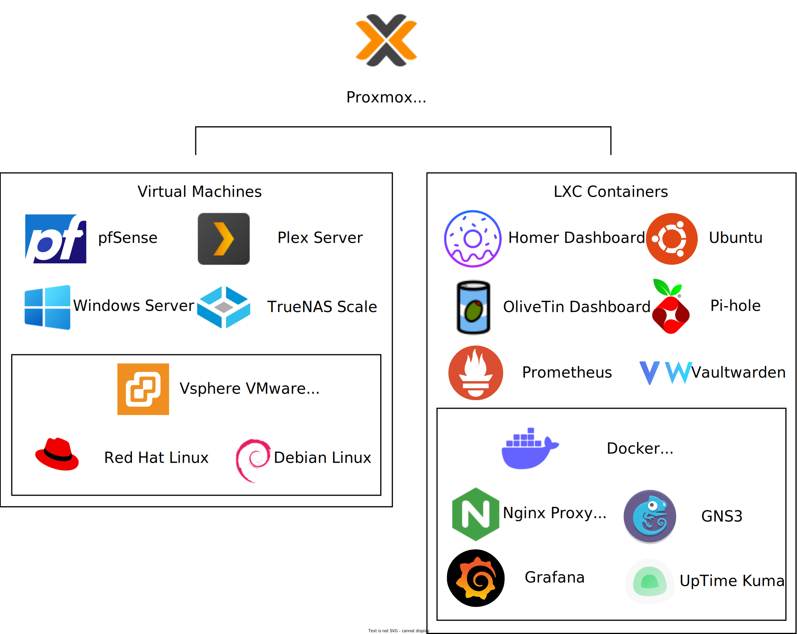

Projects
My Cloud Resume Project (This website)

- Web Development: HTML, CSS, and Javascript
- Automation: Terraform
- Cloud Engineering: AWS S3, Lambda, and Cloudfront
- Coding: Python
This project is fully automated with terraform for easy provisiong and destruction of aws resources.
Files are hosted in an aws S3 bucket and delivered with Cloudfront. Uses Lambda functions, API gateways,
and dynamoDBs to track the number of visitors and time since the last visit. Has full HTTPS encryption
and root domain rerouting via Route 53.
Home Lab

Hypervisors: Proxmox and VMWare's ESXI
Linux Distributions: Debian, Red Hat, TrueNASScale, pfSense, and Ubuntu
Container Runtimes: Docker and LXC
Containers: Homer, Olivetin, Pi-hole, Ubuntu, and Nginx Proxy Manager
Bare Metal Hypervisor running various virtual machines and containers. While some are primarily for testing and learning, several services are used daily. PfSense is as an open source router and firewall, Plex to stream media, Pi-hole for internal DNS, and TruNAS scale to host: media files, image iso's, and backups. There are a mix of dashboards and Nginx Proxy Manager to help organize the hosted services and easily manage them via a web UI, including remotely running scripts. VMware's ESXI vSphere hypervisor is virtualized due to not supporting my network card and hosts commonly used Virtual Machines to help teach differences between Proxmox and VMware. While Proxmox run it's own LXC containers, Docker runs containers that need a more up to date image than LXC offers.
The Challenge
While looking for new technologies to learn, I came across something known as the Cloud Resume Challenge. Created by Forrest Brazael, the
challenge is a hands-on project designed to help apply knowledge from cloud certifications. While the
challenge offers variations for each Cloud provider, the project itself remains largely the same. The
challenge itself is split into several steps:
- Certification: Get a Cloud Certification
- HTML: Create an HTML Resume
- CSS: Style it with CSS
- Static Website: Deploy it on the cloud (S3 bucket)
- HTTPS: Obtain and apply a valid HTTPS Certificate
- DNS: Register a Domain Name/li>
- Javascript: Program a visitor counter with javascript
- Database: Use a cloud database to retrieve and update this counter
- API: Create an API for backend communication
- Python: Create a Lambda Function for the API
- Tests: Create some Python tests
- Infrastructure as Code: deploy API resources with terraform (or SAM)
- Source Control: Automate code changes with github
- CI/CD Back end: Set up Github to test and deploy backend functions
- CD/CD Front End: Set up github actions to update the websites files
- Blog Post: Make a blog post describing what was learned
The Website
While no Web Designer, I have done some simple web development before, including a javascript
visualization,
and I had always enjoyed how responsive web development is compared to traditional software development.
I
started by by finding a sample template online,
mostly for the dark mode colors, and heavily tweaking it. Funnily enough, I ended up using a different
color
scheme, specifically facebook's scheme I found in a website comparing different
popular darkmode colors. What was most useful was the use of bootstrap grids, something I had not used
before. I also spent a large amount of time ensuring the website would properly display for mobile
devices.
I also discovered that phones display websites differently unless you specifically indicate the website
was
designed for mobile devices. I also learned about a useful "viewport" tag that enables you to get the
width
of the user's screen, which helped scale my pictures.
Deploying on AWS
Creating a simple static website with an S3 bucket was easy. I simply uploaded the relevant files and
enabled
it for static website hosting. After purchasing my domain name and configuring route 53 and cloudfront
to
point my domain name to my website, it still did not propragate after several hours. I discovered the
name
servers of my hosted zone and my registered domain did not match. Once I fixed this, my domain resolved
properly and the previously requested HTTPS certificate instantly worked as well. Once I checked my root
domain properly redirects and HTTPS was required, along with continually tweaking my website code, it
was
time to implement some basic web functions.
Programming with AWS Lambda
One of the good things about this challenge, while it gives you the basics for each steps, it does not
detail
how to do it. For example, it simply links to a javescript/python tutorial not how to implement it. The
visitor counter logical was extremely simple, but I had to learn how to reference and update my
database.
Luckily, it is similar to many programming languages handle inputs, plus some database syntax. After
ensuring the proper permissions between the lambda function, the API gateway, and the database, while
also
enabling CORS, I was able to successfully update and display my Visitor Counter.
An Additional Function
I wanted to add an additional feature with lambda/aws, since I wanted to stand out, but I had trouble
deciding on the function. I contemplated displaying different days of the week accessed, similar to
github's
calendar, but ultimately decided something much simpler: time since the last visit. I accomplished this
using unix time which is a counter from the beginning of "time" for computers, which is defined
as
1/1/1970.
Current Unix Time
1700501528
This unix time is already in seconds (after truncating) and since I'm not dealing with timezones,
I
simply used this time to find the difference since last visit. I fiddled with javascript to display this
cleanly in a weeks, days, hours, minutes, and seconds format, ensuring it properly displayed any spaces
and
singular/plural units.
Automating with Terraform
I chose to use Terraform rather than SAM since it's a bit more flexible with other vendors. I started the
process by deploying each service at a time, starting with the buckets. After declaring what types my
uploaded files should be and setting an access policy, it went smoothly. Deploying cloudfront also had
little issues, but properly getting my HTTPS certificate and dns records had more issues. I found it
easier
to do some steps manually to better visualize the steps needed for my IAC. After creating the records
needing for the DNS verification, I realized I had the same issue as before, my name servers did not
match.
I changed them manually to verify this was the issue and discovered they recently (6 months ago) added a
function to update my registered domain name server's. After automating this with terraforms for loop
equivalent, I was pleased to see it update in real time and for my certificate to be automatically
validated. After splitting my functions into several files for easier future tweaking, it was time to
automate the functions
Github Actions
Github Actions executes a workflow when a specific events occurs. My workflow updates the files of
the S3 bucket when I push changes to my repository. This way my website updates in real time whenever I
make changes, instead of having to rerun my terraform code.